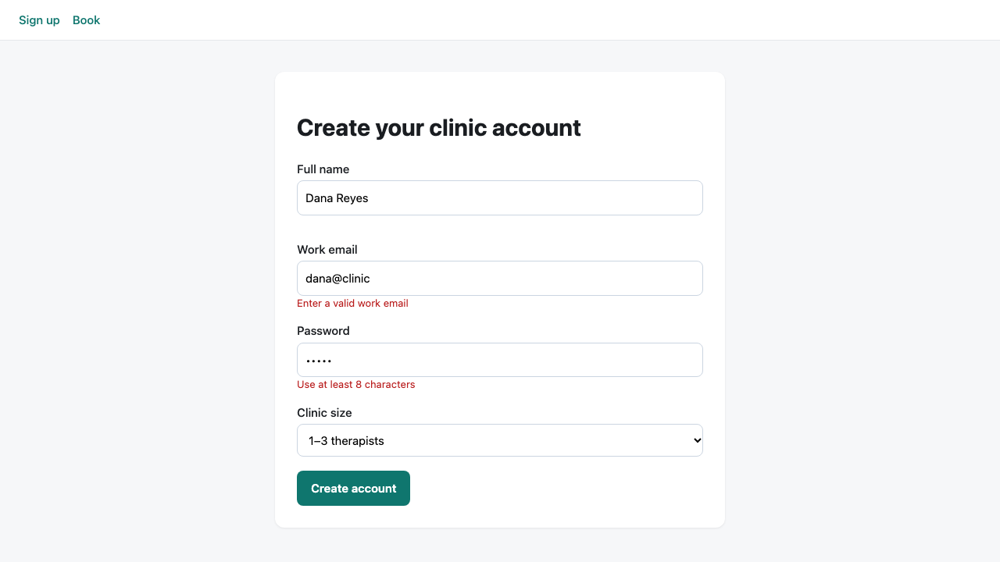
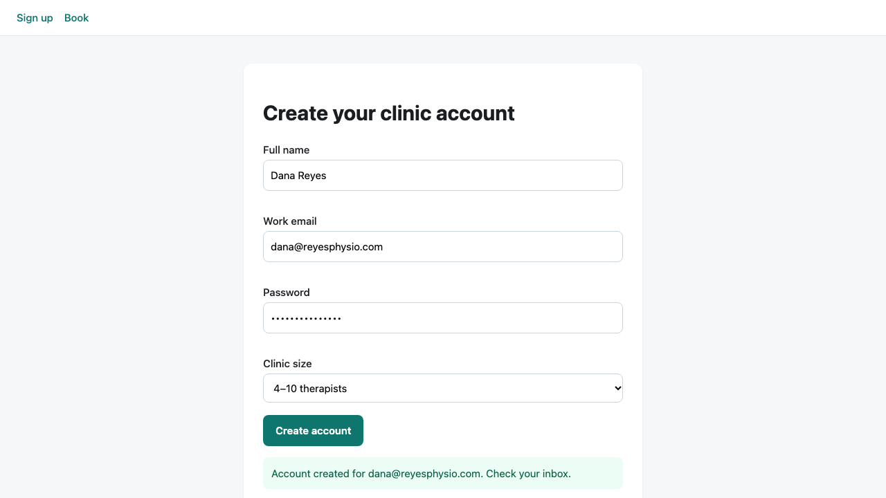

Output


Result
browser-1 (signup flow)
Submitting "dana@clinic" with a 5-character password: the form stays put, the inline errors "Enter a valid work email" and "Use at least 8 characters" appear, the name error is empty and no success box is rendered. Submitting dana@reyesphysio.com with a valid password: all three error slots are cleared and a role=status box reads "Account created for dana@reyesphysio.com. Check your inbox." Network log shows no request other than the page load, so signup is purely client-side: nothing is sent to a server, the "account" is never persisted.
Tool: Python Playwright 1.x via `uv venv` + `uv pip install playwright` + `playwright install chromium` in scratch (worked, no swap). Followed the real SKILL.md: ran `with_server.py --help` first and used it as a black box to start/stop the server, wrote plain sync_playwright scripts (headless chromium), did reconnaissance first (wait_for_load_state('networkidle') then screenshot + list buttons/inputs), then acted on discovered selectors. Server: python3 -m http.server on port 7112 managed by with_server.py.
Notable finding about the skill's helper: with_server.py starts the command with a shell, and when I used the cd-style command from the skill's own multi-server example (`--server "cd site && python3 -m http.server 7112"`) the shell was stopped but the python server child was orphaned and kept port 7112 open; the next runs then hit a stale, unresponsive listener (net::ERR_EMPTY_RESPONSE on page.goto) until I killed pid 89911. Using a command without `cd &&` (`python3 -m http.server 7112 --directory site`) stopped cleanly and `lsof` showed no leftover listener. Also: the console example in the skill writes to /mnt/user-data/outputs, which does not exist here, so I captured console and pageerror events in memory instead.
Terminal
# skill: always run helper scripts with --help first, do not read the source
python with_server.py --help
usage: with_server.py [-h] --server SERVERS --port PORTS [--timeout TIMEOUT] ...
--server SERVER Server command (can be repeated)
--port PORTS Port for each server
# install worked in scratch
uv venv .venv && uv pip install --python .venv/bin/python playwright && .venv/bin/playwright install chromium
+ playwright
+ pyee==13.0.1
...
Chrome Headless Shell 156.0.8078.4 (playwright chromium-headless-shell v1248) downloaded
# failed on the 2nd+ run: the first run orphaned the python server (pid 89911, parent 1) which still held the port
python with_server.py --server "cd site && python3 -m http.server 7112" --port 7112 -- python recon.py # run 2, 3, 4
playwright._impl._errors.Error: Page.goto: net::ERR_EMPTY_RESPONSE at http://localhost:7112/index.html
# diagnosis: leaked child of the shell that with_server.py started
lsof -nP -iTCP:7112 -sTCP:LISTEN; ps -o pid,ppid,command -p 89911; kill 89911
Python 89911 ... TCP *:7112 (LISTEN)
PID PPID COMMAND
89911 1 .../Python -m http.server 7112
# reconnaissance: waited for networkidle, screenshot, discovered selectors; lsof afterwards: no leftover listener
python with_server.py --server "python3 -m http.server 7112 --directory site" --port 7112 -- python recon.py
buttons: ['Create account']
inputs: [('name', None), ('email', 'email'), ('pw', 'password')]
Server ready on port 7112 ... Server 1 stopped
All servers stopped
# browser-1 with evidence (see screenshots)
python with_server.py --server "python3 -m http.server 7112 --directory site" --port 7112 -- python signup_test.py
INVALID -> {'name': '', 'email': 'Enter a valid work email', 'pw': 'Use at least 8 characters'} | success box: 0
VALID -> {'name': '', 'email': '', 'pw': ''} | success: Account created for dana@reyesphysio.com. Check your inbox.
requests after load: ['GET http://localhost:7112/index.html']
console/pageerrors: none
# server cleanly stopped by with_server.py
lsof -nP -iTCP:7112 -sTCP:LISTEN
(no output)
Files
signup_test.py
from playwright.sync_api import sync_playwright URL = class="s">'http://localhost:7112/index.html' requests, logs = [], [] with sync_playwright() as p: browser = p.chromium.launch(headless=True) page = browser.new_page(viewport={class="s">'width': 1280, class="s">'height': 720}) page.on(class="s">'request', lambda r: requests.append(fclass="s">'{r.method} {r.url}') if class="s">'favicon' not in r.url else None) page.on(class="s">'console', lambda m: logs.append(fclass="s">'[{m.type}] {m.text}')) page.on(class="s">'pageerror', lambda e: logs.append(fclass="s">'[pageerror] {e}')) page.goto(URL); page.wait_for_load_state(class="s">'networkidle') # 1. invalid email + short password page.fill(class="s">'#name', class="s">'Dana Reyes'); page.fill(class="s">'#email', class="s">'dana@clinic'); page.fill(class="s">'#pw', class="s">'short') page.click(class="s">'button[type=submit]') page.wait_for_selector(class="s">'#e-email:not(:empty)') print(class="s">'INVALID ->', {k: page.inner_text(fclass="s">'#e-{k}') for k in (class="s">'name', class="s">'email', class="s">'pw')}, class="s">'| success box:', page.locator(class="s">'.ok').count()) page.screenshot(path=class="s">'out/browser-1-invalid.png') # 2. valid page.fill(class="s">'#email', class="s">'dana@reyesphysio.com'); page.fill(class="s">'#pw', class="s">'correct-horse-9'); page.select_option(class="s">'#size', label=class="s">'4–10 therapists') page.click(class="s">'button[type=submit]') page.wait_for_selector(class="s">'.ok') print(class="s">'VALID ->', {k: page.inner_text(fclass="s">'#e-{k}') for k in (class="s">'name', class="s">'email', class="s">'pw')}, class="s">'| success:', page.inner_text(class="s">'.ok')) page.screenshot(path=class="s">'out/browser-1-valid.png') print(class="s">'requests after load:', requests) print(class="s">'console/pageerrors:', logs or class="s">'none') browser.close()
recon.py
from playwright.sync_api import sync_playwright URL = class="s">'http://localhost:7112/index.html' with sync_playwright() as p: browser = p.chromium.launch(headless=True) page = browser.new_page(viewport={class="s">'width': 1280, class="s">'height': 720}) page.goto(URL) page.wait_for_load_state(class="s">'networkidle') page.screenshot(path=class="s">'out/recon-signup.png', full_page=True) print(class="s">'buttons:', [b.inner_text() for b in page.locator(class="s">'button').all()]) print(class="s">'inputs:', [(i.get_attribute(class="s">'id'), i.get_attribute(class="s">'type')) for i in page.locator(class="s">'input').all()]) browser.close()